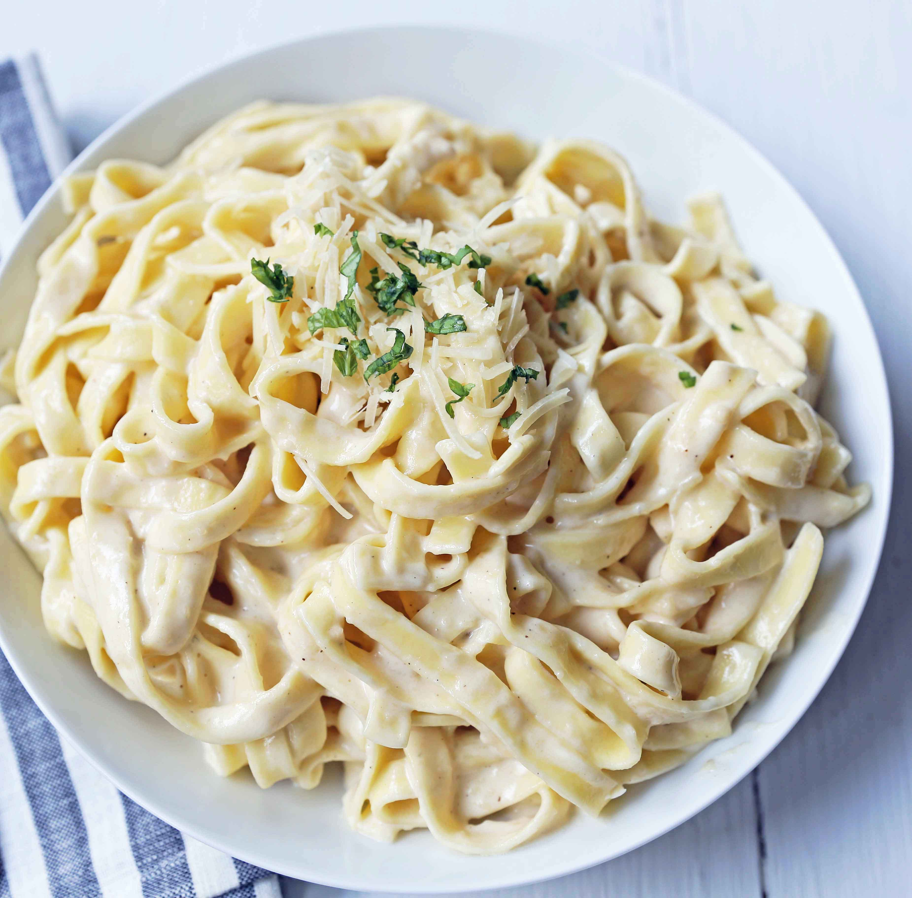

JJ's Recipes
¡Sabores autenticos que te haran volver por mas!

Ensalada Cesar
Platillo frio elaborado con lechuga y pan tostado, aderezado con una mezcla de ajo, aceite de oliva...

Ensalada Griega
Es una opción ideal para los días calurosos o como acompañamiento ligero en cualquier comida..

Pasta Alfredo
Plato clásico de la cocina italiana, conocido por su salsa rica y cremosa que combina a la perfección con la pasta..

Pasta Bolognese
La pasta boloñesa es un plato tradicional italiano conocido por su salsa rica y sabrosa a base de carne.
Pasta verde
plato vibrante y delicioso que se puede preparar de varias maneras, pero en general se refiere a pasta acompañada de una salsa verde hecha de ingredientes frescos y sabrosos.

Postres

Tiramisu
es un clásico de la pastelería italiana que ha conquistado paladares en todo el mundo con su combinación de sabores y texturas.